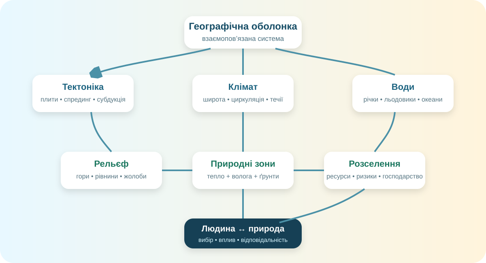

Побачити систему, а не набір тем
Сьогодні Ви працюєте як географ-аналітик: читаєте світову карту, зіставляєте дані, шукаєте причинно-наслідкові зв’язки та робите обґрунтований висновок.

Схема-підказка: тектоніка, клімат, води, рельєф, природні зони та розселення працюють разом.
Паспорт учня
Робота відкриється після заповнення трьох полів.
Світова карта: знайдіть закономірність
Не шукайте окремі об’єкти. Шукайте просторові зв’язки.
Зв’язки: від причини до наслідку
Ланцюг А
Анди → ? → ? → пустеля Атакама
Ланцюг Б
Тепла океанічна течія → ? → ? → природні умови узбережжя
Материки й океани: порівняйте системно
Оберіть пару: Африка ↔ Південна Америка або Тихий ↔ Атлантичний океан.
2 бали: 1 за коректне порівняння, 1 за причинне пояснення.
Кейс: де будувати нове місто?
У Вас є три умовні ділянки. Оберіть не «найкрасивішу», а найстійкішу.
Річкова долина, родючі ґрунти, часті повені, 40 км до моря.
Плато, помірний клімат, дефіцит поверхневих вод, стабільна тектонічна ділянка.
Вулканічне узбережжя, порт, рибні ресурси, високий ризик землетрусів і цунамі.
Місто на 500 тис. осіб має працювати 100 років із мінімальним ризиком.
Фінальний CER
Підсумуйте весь курс одним доказовим висновком.
Самооцінювання
Оцініть себе від 1 до 4 за кожною навичкою.
Після завершення тут з’явиться результат.